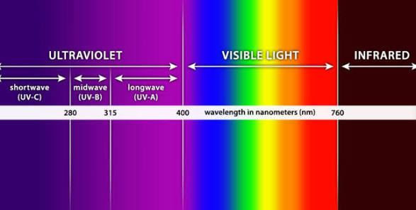

UV vs Sunlight
Sunlight is the total spectrum of electromagnetic radiation emitted by the sun—comprising visible light, heat-producing infrared, and ultraviolet (UV) radiation—while UV rays are a specific, high-energy component of that spectrum which is largely filtered by the Earth's atmosphere but still reaches the surface. While total sunlight provides essential warmth and light for life, UV radiation carries higher energy levels that cause invisible damage to skin and materials, such as sunburns and skin cancer. Unlike visible sunlight, which we see, UV radiation is invisible, largely absorbed by the ozone layer, and acts as ionizing radiation, meaning its high-energy wavelengths are strong enough to affect chemical bonds and biological tissues, unlike visible or infrared light. Therefore, UV is a component within the broad range of light produced by the sun, responsible for the negative health effects associated with long-term sun exposure.